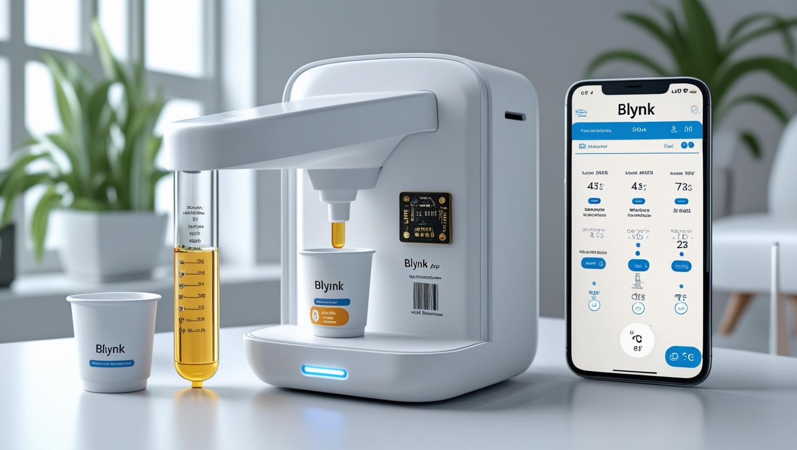
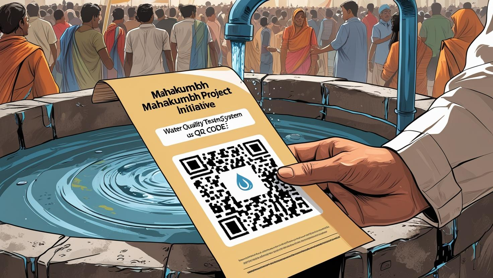

Smart Viral Fever Kit (IoT + Healthcare) Designed a smart healthcare kit that can dispense fever medicine automatically and monitor body temperature. Integrated with ESP32 microcontroller and a temperature sensor. Data sent to smartphones via the Blynk app, enabling real-time health monitoring. Demonstrated applications of IoT in healthcare automation.
Water Quality Testing System (Mahakumbh Project) (In Progress) Developing a QR code–based water testing solution for large gatherings like Mahakumbh. A paper with QR code is placed at water points; when scanned, it provides real-time water quality info. If water is unsafe, the system guides users to the nearest safe-water booth. Currently refining data integration and user interface.
